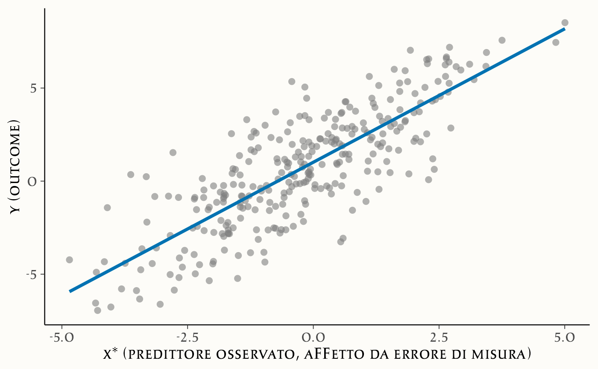
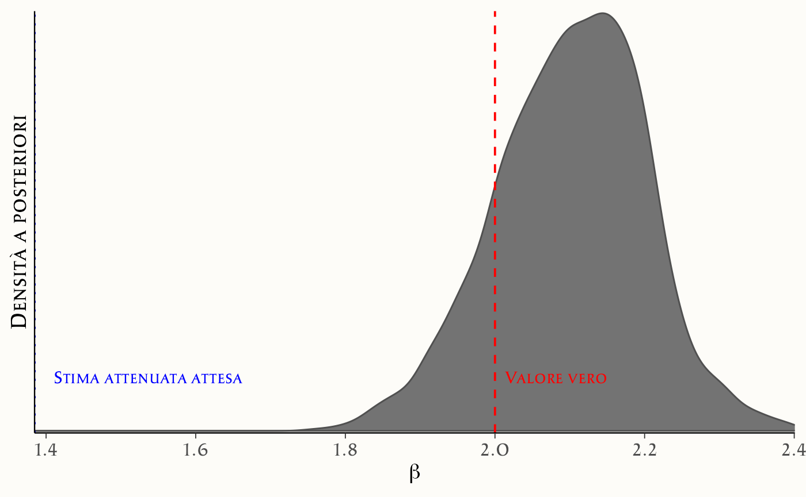
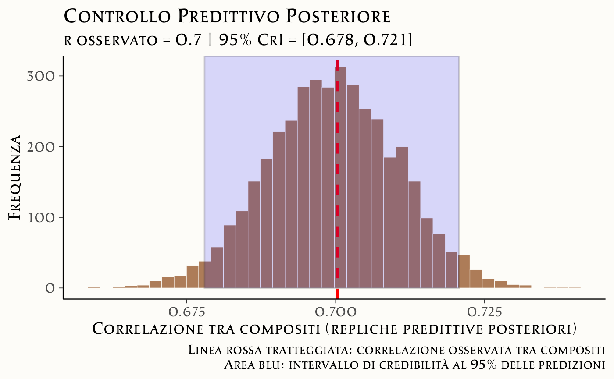

here::here("code", "_common.R") |> source()
if (!requireNamespace("pacman")) install.packages("pacman")
pacman::p_load(
tidyverse, cmdstanr, posterior, bayesplot, bayestestR, brms, ggdist, broom,
glue, tibble
)
conflicts_prefer(stats::sd)36 Errore di misurazione e attenuazione: una soluzione bayesiana
Introduzione
La ricerca psicologica si confronta costantemente con una sfida epistemologica e metodologica fondamentale: i costrutti d’interesse – quali l’ansia, l’intelligenza o la motivazione – sono entità latenti, non direttamente osservabili. La loro rilevazione avviene necessariamente attraverso approssimazioni operative, quali questionari, test psicometrici e scale di valutazione, che incorporano inevitabilmente una componente di errore di misura.
Trascurare la bassa affidabilità psicometrica di tali strumenti non costituisce un mero dettaglio tecnico, bensì un problema metodologico sostanziale, in grado di alterare in maniera sistematica la validità delle inferenze scientifiche. Un esempio paradigmatico è fornito dal fenomeno dell’attenuazione della stima: quando una variabile predittiva continua, affetta da errore di misura, viene trattata in un’analisi di regressione come se fosse misurata in modo perfetto, il coefficiente di regressione stimato risulta sistematicamente distorto verso lo zero. Questa distorsione statistica, nota come attenuazione del coefficiente di regressione, sottostima artificialmente l’entità della relazione tra il costrutto latente e l’esito di interesse, compromettendo l’accuratezza delle conclusioni.
Il presente capitolo illustra l’utilità di un approccio bayesiano come metodo operativo per contrastare tale problematica. Modellizzando esplicitamente il processo di misura, possiamo correggere queste distorsioni e recuperare stime più veritiere della relazione tra i costrutti latenti di interesse. In pratica, questo ci permette di riportare l’analisi statistica sul piano del tratto latente che ci interessa davvero, propagando in modo coerente l’incertezza legata alla sua misurazione.
Per fissare le idee, si consideri un caso semplice: una regressione lineare in cui un esito \(y\) è regredito su un predittore latente \(x\). Nei dati osservativi, tuttavia, non si misura \(x\) ma una sua versione contaminata da errore, \(x^*\). L’utilizzo di \(x^*\) al posto di \(x\) produce una stima attenuata del coefficiente di regressione.
La soluzione bayesiana consiste nel separare esplicitamente il modello strutturale dal modello di misura. Si specifica un modello tale per cui:
- il modello strutturale regredisce \(y\) sul costrutto latente \(x\),
- il modello di misura definisce come il punteggio osservato \(x^*\) sia generato a partire da \(x\) (ad esempio, \(x^* \sim \mathcal{N}(x, \sigma^2_{errore})\)).
In questo framework, l’errore di misura viene modellato e isolato nella componente di misura, prevenendo l’attenuazione della stima della relazione strutturale tra \(x\) e \(y\). Nel capitolo, questo approccio sarà dimostrato tramite simulazioni e implementato in Stan.
Nella seconda parte del capitolo, estenderemo questa logica al contesto della correlazione tra due costrutti psicologici. La Teoria Classica dei Test (CTT) fornisce una soluzione formale nota come correzione per disattenuazione, che stima il coefficiente di correlazione vero a partire dai coefficienti di attendibilità delle misure osservate. Questa procedura, tuttavia, è valida solo sotto forti assunzioni, tra cui l’indipendenza degli errori di misura e la conoscenza esatta dell’attendibilità.
Quando tali assunzioni non sono soddisfatte – ad esempio, in presenza di un effetto di metodo o di una fonte di varianza condivisa che induce correlazione tra gli errori – la formula classica tende a sovracorreggere, producendo stime della correlazione vera distorte e instabili. L’approccio bayesiano supera questi limiti specificando un modello di misurazione congiunto in cui entrambi i costrutti sono trattati come variabili latenti. Tale modello permette di esplicitare la struttura di covarianza degli errori (ammettendo, se necessario, correlazioni residue) e di incorporare eventuali fattori di metodo latenti.
In questo framework, la correlazione di tratto viene stimata direttamente, evitando i bias della CTT e propagando appropriatamente l’incertezza sulle attendibilità. È importante sottolineare che, qualora le assunzioni della CTT siano verificate, il modello bayesiano converge verso la stima classica; in caso contrario, esso fornisce una alternativa più robusta e generalizzabile.
In sintesi, il capitolo svilupperà una progressione concettuale e metodologica articolata in tre fasi. In primo luogo, mediante dati simulati, verrà illustrato il fenomeno dell’attenuazione in modelli di regressione e dimostrato come un modello bayesiano che incorpori il predittore latente consenta di recuperare il parametro strutturale corretto. Successivamente, estenderemo l’analisi al contesto della correlazione, mettendo in luce i limiti della correzione per disattenuazione nella Teoria Classica dei Test e i vantaggi di una modellazione congiunta con variabili latenti.
Infine, presenteremo modelli bayesiani implementati in Stan in cui la distinzione tra tratto latente e componente metodologica è resa esplicita, anche per costrutti multidimensionali misurati da più indicatori. L’adeguatezza dei modelli sarà valutata mediante strumenti diagnostici quali i posterior predictive checks.
L’obiettivo finale è mostrare come la modellazione della misura – ovvero la specificazione esplicita di un modello di misurazione – costituisca un autentico cambio di prospettiva epistemologica. Questo approccio non è un esercizio tecnico formale, ma una pratica che migliora l’interpretazione sostantiva e l’affidabilità inferenziale, poiché permette di dichiarare il processo generativo dei dati e distinguere, in modo probabilistico, la varianza attribuibile al costrutto da quella dovuta all’errore o al metodo di misurazione.
36.1 Perché l’errore di misurazione conta
Nella ricerca psicologica, i predittori sono spesso costruiti a partire da strumenti di misura imperfetti – questionari, test o scale psicometriche. Per esempio, quando in un’analisi di regressione si utilizza il punteggio osservato \(x^*\) come se fosse la vera variabile latente \(x\), si introduce un errore sistematico: la stima della pendenza risulta attenuata, cioè spinta verso lo zero.
La standardizzazione dei punteggi non risolve il problema: nella regressione semplice, la pendenza standardizzata coincide con la correlazione osservata \(r_{y,x^*}\), che a sua volta è attenuata rispetto alla correlazione vera.
Per comprendere formalmente l’origine dell’attenuazione, consideriamo il classico modello di misura con errore additivo:
\[ y = \beta x + \varepsilon, \] dove \(\varepsilon\) è un termine di errore con \(\mathbb{E}[\varepsilon] = 0\), \(\operatorname{Var}(\varepsilon) = \sigma_\varepsilon^2\), e \(\operatorname{Cov}(x, \varepsilon) = 0\).
Tuttavia, non osserviamo \(x\) direttamente, ma una sua misura rumorosa:
\[ x^* = x + \delta, \] dove \(\delta\) è l’errore di misurazione con \(\mathbb{E}[\delta] = 0\), \(\operatorname{Var}(\delta) = \sigma_\delta^2\), e assumiamo \(\operatorname{Cov}(x, \delta) = 0\) e \(\operatorname{Cov}(\varepsilon, \delta) = 0\).
Lo stimatore ingenuo di \(\beta\) si ottiene regredendo \(y\) su \(x^*\): \[ \hat{\beta}_{\text{naive}} = \frac{\operatorname{Cov}(x^*, y)}{\operatorname{Var}(x^*)}. \]
Calcoliamo ora l’aspettativa di \(\hat{\beta}_{\text{naive}}\).
-
Passaggio 1: Calcolo di \(\operatorname{Cov}(x^*, y)\). \[ \begin{aligned} \operatorname{Cov}(x^*, y) &= \operatorname{Cov}(x + \delta, \beta x + \varepsilon) \\ &= \beta \operatorname{Cov}(x + \delta, x) + \operatorname{Cov}(x + \delta, \varepsilon). \end{aligned} \]
Per le assunzioni:
- \(\operatorname{Cov}(x, \varepsilon) = 0\) e \(\operatorname{Cov}(\delta, \varepsilon) = 0\) ⇒ \(\operatorname{Cov}(x + \delta, \varepsilon) = 0\),
- \(\operatorname{Cov}(\delta, x) = 0\) ⇒ \(\operatorname{Cov}(x + \delta, x) = \operatorname{Var}(x)\).
Quindi: \[ \operatorname{Cov}(x^*, y) = \beta \operatorname{Var}(x). \]
Passaggio 2: Calcolo di \(\operatorname{Var}(x^*)\). \[ \begin{aligned} \operatorname{Var}(x^*) &= \operatorname{Var}(x + \delta) \\ &= \operatorname{Var}(x) + \operatorname{Var}(\delta) + 2 \operatorname{Cov}(x, \delta) \\ &= \operatorname{Var}(x) + \operatorname{Var}(\delta) \quad (\text{poiché } \operatorname{Cov}(x, \delta) = 0). \end{aligned} \]
-
Passaggio 3: Aspettativa dello stimatore ingenuo. \[ \mathbb{E}[\hat{\beta}_{\text{naive}}] = \frac{\operatorname{Cov}(x^*, y)}{\operatorname{Var}(x^*)} = \frac{\beta \operatorname{Var}(x)}{\operatorname{Var}(x) + \operatorname{Var}(\delta)}. \]
Introducendo le notazioni \(\sigma_x^2 = \operatorname{Var}(x)\) e \(\sigma_\delta^2 = \operatorname{Var}(\delta)\), otteniamo:
\[ \mathbb{E}[\hat{\beta}_{\text{naive}}] = \beta \cdot \frac{\sigma_x^2}{\sigma_x^2 + \sigma_\delta^2}. \]
-
Passaggio 4: Definizione del fattore di affidabilità \(\lambda\). Definiamo il rapporto di affidabilità: \[ \lambda = \frac{\sigma_x^2}{\sigma_x^2 + \sigma_\delta^2}. \] Allora: \[ \mathbb{E}[\hat{\beta}_{\text{naive}}] = \beta \cdot \lambda. \]
Osservazione: Poiché \(0 < \lambda < 1\) (a meno che \(\sigma_\delta^2 = 0\)), lo stimatore ingenuo è distorto verso lo zero (attenuation bias). La distorsione verso lo zero implica che l’effetto stimato è in valore assoluto inferiore al vero parametro \(\beta\).
-
Casi particolari:
- Se \(\sigma_\delta^2 = 0\) (nessun errore di misura), \(\lambda = 1\) e lo stimatore è corretto.
- Se \(\sigma_\delta^2 \gg \sigma_x^2\), \(\lambda \approx 0\) e lo stimatore tende a zero.
-
Casi particolari:
36.2 Il modello bayesiano dell’errore di misurazione
Il modello bayesiano dell’errore di misurazione specifica esplicitamente due componenti distinte: il modello strutturale e il modello di misurazione:
\[ \begin{aligned} x_i &\sim \mathcal{N}(\mu_x, \sigma_x^2) && \text{(Prior della variabile latente)} \\ y_i \mid x_i &\sim \mathcal{N}(\alpha + \beta x_i, \sigma_y^2) && \text{(Modello strutturale)} \\ x_i^* \mid x_i &\sim \mathcal{N}(x_i, \sigma_{\text{meas}}^2) && \text{(Modello di misura)} \end{aligned} \] In questa specificazione, assumiamo che la varianza dell’errore di misura \(\sigma_{\text{meas}}^2\) sia nota (ad esempio, ricavata da stime di affidabilità precedenti1). Questa assunzione semplifica il problema di identificazione del modello e permette di illustrare chiaramente come la corretta specificazione del processo di misurazione prevenga l’attenuazione della stima del parametro strutturale \(\beta\).
36.3 Piano dell’esperimento didattico
Nelle sezioni successive, verranno simulati dati con parametri noti, introducendo deliberatamente un errore di misura nel predittore. Confronteremo due approcci analitici:
- Un’analisi ingenua che utilizza il predittore misurato con errore \(x^*\) (sia in scala originale che standardizzata), dimostrando il fenomeno dell’attenuazione delle stime.
- Un’analisi bayesiana che modella esplicitamente \(x\) come variabile latente, con \(x^*\) come suo indicatore rumoroso, mostrando il corretto recupero del parametro strutturale vero.
36.3.1 Simulazione dei dati “veri” e delle osservazioni con errore di misura
Definiamo parametri con valori semplici e interpretabili per illustrare chiaramente il fenomeno:
set.seed(20250912) # Per riproducibilità
N <- 300 # Dimensione campionaria
a_true <- 1.0 # Intercetta vera
b_true <- 2.0 # Coefficiente di regressione vero
sigma_true <- 1.0 # Deviazione standard dell'errore nell'outcome
mu_x_true <- 0.0 # Media della variabile latente x
sigma_x_true <- 1.5 # Deviazione standard della variabile latente x
sigma_xstar <- 1.0 # Deviazione standard dell'errore di misura (nota a priori)
# Generazione del predittore latente e dell'outcome
x_true <- rnorm(N, mean = mu_x_true, sd = sigma_x_true)
y <- a_true + b_true * x_true + rnorm(N, 0, sigma_true)
# Generazione del predittore osservato con errore di misura
x_star <- x_true + rnorm(N, 0, sigma_xstar)
# Creazione del dataframe dei dati
dat <- tibble(x_true, x_star, y)
head(dat)
#> # A tibble: 6 × 3
#> x_true x_star y
#> <dbl> <dbl> <dbl>
#> 1 1.20 0.771 2.94
#> 2 -3.03 -2.60 -4.62
#> 3 2.56 1.83 5.93
#> 4 -0.913 -1.55 0.626
#> 5 2.29 2.63 5.63
#> 6 0.914 -0.168 5.05Calcolo del fattore di attenuazione teorico:
lambda_theory <- sigma_x_true^2 / (sigma_x_true^2 + sigma_xstar^2)
lambda_theory
#> [1] 0.69236.3.2 Ispezione visiva della relazione osservata
ggplot(dat, aes(x = x_star, y = y)) +
geom_point(alpha = 0.6, shape = 16) +
geom_smooth(method = "lm", formula = y ~ x, se = FALSE, color = "#0072B2") +
labs(x = "x* (predittore osservato, affetto da errore di misura)",
y = "y (outcome)") 
36.4 Analisi ingenua (ignorando l’errore di misura)
36.4.1 Regressione sulla scala originale
# Regressione lineare che ignora l'errore di misura
fit_naive_raw <- lm(y ~ x_star, data = dat)
naive_raw_tab <- broom::tidy(fit_naive_raw, conf.int = TRUE)
naive_raw_tab
#> # A tibble: 2 × 7
#> term estimate std.error statistic p.value conf.low conf.high
#> <chr> <dbl> <dbl> <dbl> <dbl> <dbl> <dbl>
#> 1 (Intercept) 1.01 0.107 9.44 1.13e-18 0.802 1.23
#> 2 x_star 1.43 0.0597 24.0 1.04e-71 1.32 1.55Verifica teorica. Ci si aspetta che la stima ingenua del coefficiente sia approssimativamente uguale al prodotto tra il parametro vero e il fattore di attenuazione: \(\hat \beta_{\text{ingenua}} \approx \beta_{\text{vero}} \times \lambda\).
b_naive <- coef(fit_naive_raw)[["x_star"]]
tibble(
beta_vero = b_true,
lambda_teorico = lambda_theory,
beta_vero_per_lambda = b_true * lambda_theory,
beta_naive_osservato = unname(b_naive)
)
#> # A tibble: 1 × 4
#> beta_vero lambda_teorico beta_vero_per_lambda beta_naive_osservato
#> <dbl> <dbl> <dbl> <dbl>
#> 1 2 0.692 1.38 1.4336.4.2 Regressione su variabili standardizzate
# Standardizzazione delle variabili e regressione
dat_std <- dat %>%
mutate(
y_z = as.numeric(scale(y)),
x_star_z = as.numeric(scale(x_star))
)
fit_naive_std <- lm(y_z ~ x_star_z, data = dat_std)
broom::tidy(fit_naive_std, conf.int = TRUE)
#> # A tibble: 2 × 7
#> term estimate std.error statistic p.value conf.low conf.high
#> <chr> <dbl> <dbl> <dbl> <dbl> <dbl> <dbl>
#> 1 (Intercept) -7.47e-17 0.0337 -2.21e-15 1.000e+ 0 -0.0664 0.0664
#> 2 x_star_z 8.12e- 1 0.0338 2.40e+ 1 1.04 e-71 0.746 0.879Interpretazione. La standardizzazione non elimina l’attenuazione: il coefficiente di regressione standardizzato corrisponde al coefficiente di correlazione \(r_{y,x^*}\), che rimane attenuato rispetto alla correlazione tra i costrutti latenti.
cor(dat$x_true, dat$y)
#> [1] 0.94536.5 Modello bayesiano con correzione per errore di misurazione (Stan)
Nel contesto del modello bayesiano per l’errore di misurazione, viene modellata esplicitamente sia la componente strutturale, che definisce la relazione tra il predittore latente \(x\) e la variabile di outcome \(y\), sia il processo di misurazione, che caratterizza la relazione tra il predittore latente \(x\) e il valore osservato \(x^*\). Si assume nota la deviazione standard dell’errore di misurazione \(\sigma_{\delta}\). Il modello utilizza prior debolmente informativi robusti.
36.5.1 Implementazione in Stan
stancode <- write_stan_file("
data {
int<lower=1> N; // Dimensione campionaria
vector[N] y; // Outcome
vector[N] x_star; // Predittore osservato con errore
real<lower=0> sigma_x_star; // SD dell'errore di misura (nota)
}
parameters {
real a; // Intercetta
real b; // Coefficiente di regressione
real mu_x; // Media del predittore latente
real<lower=0> sigma; // SD dell'errore nell'outcome
real<lower=0> sigma_x; // SD del predittore latente (eterogeneità tra x_n)
vector[N] x; // Predittore latente (parametrizzazione centered)
}
model {
// Priors debolmente informativi e robusti
a ~ normal(0, 5);
b ~ student_t(3, 0, 5); // code pesanti per b
mu_x ~ normal(0, 5);
sigma ~ student_t(3, 0, 2.5); // half-Student-t implicita (vincolo <lower=0>)
sigma_x ~ student_t(3, 0, 2.5); // half-Student-t implicita
// Prior gerarchica (centered) sul predittore latente
x ~ normal(mu_x, sigma_x);
// Modello strutturale: y | x
y ~ normal(a + b * x, sigma);
// Modello di misura: x_star | x
x_star ~ normal(x, sigma_x_star);
}
generated quantities {
vector[N] y_rep; // posterior predictive checks
for (n in 1:N)
y_rep[n] = normal_rng(a + b * x[n], sigma);
}
")36.5.2 Preparazione dati e campionamento della posterior
mod <- cmdstan_model(stancode, compile = TRUE)stan_data <- list(
N = N,
y = y,
x_star = x_star,
sigma_x_star = sigma_xstar
)
fit <- mod$sample(
data = stan_data,
seed = 20250912,
chains = 4,
parallel_chains = 4,
iter_warmup = 1000,
iter_sampling = 1000,
adapt_delta = 0.95,
max_treedepth = 12,
refresh = 0
)36.5.3 Sintesi delle distribuzioni posteriori e confronto con valori veri
draws <- as_draws_df(fit$draws(c("a", "b", "mu_x", "sigma", "sigma_x")))
sum_tab <- summarise_draws(
draws,
mean, median, sd,
~quantile(.x, probs = c(0.025, 0.25, 0.75, 0.975)),
rhat = rhat,
ess_bulk = ess_bulk,
ess_tail = ess_tail
) %>%
mutate(
true_value = c(a_true, b_true, mu_x_true, sigma_true, sigma_x_true),
bias = mean - true_value,
relative_bias = bias / true_value
)
sum_tab
#> # A tibble: 5 × 14
#> variable mean median sd `2.5%` `25%` `75%` `97.5%` rhat ess_bulk
#> <chr> <dbl> <dbl> <dbl> <dbl> <dbl> <dbl> <dbl> <dbl> <dbl>
#> 1 a 1.162 1.163 0.129 0.910 1.074 1.246 1.421 1.020 158.627
#> 2 b 2.101 2.106 0.100 1.897 2.034 2.171 2.292 1.117 30.349
#> 3 mu_x -0.236 -0.236 0.101 -0.434 -0.304 -0.167 -0.038 1.005 469.207
#> 4 sigma 0.569 0.548 0.252 0.165 0.358 0.771 1.057 1.238 13.955
#> 5 sigma_x 1.478 1.476 0.082 1.320 1.421 1.531 1.645 1.033 153.194
#> ess_tail true_value bias relative_bias
#> <dbl> <dbl> <dbl> <dbl>
#> 1 443.630 1.000 0.162 0.162
#> 2 114.510 2.000 0.101 0.050
#> 3 904.459 0.000 -0.236 -Inf
#> 4 49.420 1.000 -0.431 -0.431
#> 5 305.100 1.500 -0.022 -0.015mcmc_dens(fit$draws("b")) +
geom_vline(xintercept = b_true, linetype = 2, color = "red") +
geom_vline(xintercept = b_true * lambda_theory, linetype = 3, color = "blue") +
labs(x = expression(beta), y = "Densità a posteriori") +
annotate("text", x = b_true, y = 0.5, label = "Valore vero",
color = "red", hjust = -0.1) +
annotate("text", x = b_true * lambda_theory, y = 0.5,
label = "Stima attenuata attesa", color = "blue", hjust = -0.1)
36.5.4 Confronto quantitativo tra approccio ingenuo e bayesiano
naive_est <- broom::tidy(fit_naive_raw, conf.int = TRUE) %>%
filter(term == "x_star") %>%
transmute(
model = "Ingenuo (OLS)",
estimate = estimate,
conf.low = conf.low,
conf.high = conf.high
)
bayesian_est <- sum_tab %>%
filter(variable == "b") %>%
transmute(
model = "Bayesiano (corretto)",
estimate = mean,
conf.low = `2.5%`,
conf.high = `97.5%`
)
comparison_table <- bind_rows(naive_est, bayesian_est) %>%
mutate(
true_value = b_true,
attenuation_factor = lambda_theory
)
comparison_table
#> # A tibble: 2 × 6
#> model estimate conf.low conf.high true_value attenuation_factor
#> <chr> <dbl> <dbl> <dbl> <dbl> <dbl>
#> 1 Ingenuo (OLS) 1.43 1.32 1.55 2 0.692
#> 2 Bayesiano (corretto) 2.10 1.90 2.29 2 0.692In conclusione, l’analisi dimostra che la stima ingenua risulta attenuata verso \(b \times \lambda\), mentre il modello bayesiano, incorporando esplicitamente la struttura di misurazione, recupera efficacemente il parametro strutturale vero (\(b_{\text{true}}\)). I parametri del modello bayesiano (\(a\), \(b\), \(\sigma_x\)) mostrano una sostanziale coerenza con i valori di simulazione, considerando l’incertezza campionaria. L’uso di prior robuste garantisce stime affidabili.
36.6 Oltre Spearman: quando la disattenuazione sovrastima
Nella sezione precedente abbiamo visto che l’errore di misurazione in un predittore \(x\) comporta un’attenuazione della stima del suo coefficiente di regressione. Un fenomeno del tutto analogo si presenta quando vogliamo stimare la correlazione tra due costrutti latenti—per esempio ansia e depressione—che osserviamo indirettamente tramite indicatori (ad es., punteggi di questionari).
Nel quadro della Teoria Classica dei Test, i punteggi osservati si rappresentano come somma di un “punteggio vero” e di un errore di misurazione:
\[ X^* = X + \varepsilon_x,\qquad Y^* = Y + \varepsilon_y, \] dove \(X^*\) e \(Y^*\) sono i valori osservati, \(X\) e \(Y\) i tratti latenti di interesse, ed \(\varepsilon_x,\varepsilon_y\) gli errori. Se gli errori hanno media zero e sono indipendenti sia dai rispettivi tratti sia tra loro, la correlazione osservata \(r_{X^*Y^*}\) risulta attenuata rispetto alla correlazione “vera” \(\rho_{XY}\) tra i costrutti. La correzione proposta da Spearman (1904) è:
\[ \rho_{XY} \;=\; \frac{r_{X^*Y^*}}{\sqrt{r_{xx}\, r_{yy}}}\,, \] dove \(r_{xx}\) e \(r_{yy}\) sono le affidabilità delle due misure (rapporto tra varianza vera e varianza osservata). In pratica, tali coefficienti si stimano con procedure come test–retest, forme parallele e indici di coerenza interna (ad es., alfa di Cronbach, o meglio ancora \(\omega\)).
Questa correzione è utile, ma poggia su ipotesi forti (indipendenza e assenza di errori correlati).
36.6.1 Il problema: quando gli errori non sono indipendenti
La correzione di Spearman funziona solo se gli errori sono indipendenti dal tratto e tra loro. Quando questa ipotesi è violata, la disattenuazione può sovrastimare—talvolta in modo marcato—la correlazione tra i costrutti.
Una violazione tipica nasce dalla varianza di metodo condivisa: stessa fonte informativa, stessa modalità di somministrazione, stesso contesto, stesse convenzioni di risposta. In tali casi è utile esplicitare un componente sistematico di metodo \(M\) comune a entrambe le misure:
\[ X^* = X + M + \varepsilon_x,\qquad Y^* = Y + M + \varepsilon_y, \] dove \(X\) e \(Y\) sono i costrutti latenti di interesse, \(M\) cattura la porzione di varianza dovuta al metodo (ad es., desiderabilità sociale, stile acquiescente, contesto), ed \(\varepsilon_x,\varepsilon_y\) sono gli errori residui.
In questo schema,
\[ \operatorname{Cov}(X^*,Y^*) = \operatorname{Cov}(X,Y) + \operatorname{Var}(M) + \operatorname{Cov}(\varepsilon_x,\varepsilon_y), \] e \[ \operatorname{Var}(X^*)=\operatorname{Var}(X)+\operatorname{Var}(M)+\operatorname{Var}(\varepsilon_x), \]
\[ \operatorname{Var}(Y^*)=\operatorname{Var}(Y)+\operatorname{Var}(M)+\operatorname{Var}(\varepsilon_y). \]
Ora, se definiamo le affidabilità rispetto ai costrutti \(r_{xx}=\operatorname{Var}(X)/\operatorname{Var}(X^*)\) e \(r_{yy}=\operatorname{Var}(Y)/\operatorname{Var}(Y^*)\), la correzione di Spearman applicata a \(r_{X^*Y^*}\) si semplifica in modo illuminante:
\[ \frac{r_{X^*Y^*}}{\sqrt{r_{xx}r_{yy}}} \;=\; \frac{\operatorname{Cov}(X^*,Y^*)}{\sqrt{\operatorname{Var}(X)\operatorname{Var}(Y)}} \;=\; \rho_{XY}\;+\;\frac{\operatorname{Var}(M)+\operatorname{Cov}(\varepsilon_x,\varepsilon_y)}{\sqrt{\operatorname{Var}(X)\operatorname{Var}(Y)}}. \]
Questa identità mostra che, non appena esiste una componente di metodo condivisa \(\operatorname{Var}(M)>0\) (o residui correlati), la “correzione” non recupera la correlazione vera \(\rho_{XY}\), ma la gonfia aggiungendo un termine di bias positivo. In altre parole, anche con affidabilità perfettamente definite rispetto ai costrutti, la disattenuazione di Spearman sovrastima \(\rho_{XY}\) quando gli errori non sono indipendenti. Nei casi estremi, il valore “corretto” può persino superare 1 in valore assoluto, segnalando la violazione delle ipotesi.
La situazione pratica è spesso peggiore: molte stime d’affidabilità (test–retest, forme parallele, indici di coerenza interna come \(\alpha\) o \(\omega\)) assorbono parte della varianza di metodo trattandola come varianza “vera” stabile. Ciò rende \(r_{xx}\) e \(r_{yy}\) artificiosamente elevati, lasciando il numeratore—già inflazionato dalla varianza di metodo—pressoché invariato, e la disattenuazione finisce per amplificare ulteriormente la sovrastima.
36.6.2 La soluzione adottata: modello bayesiano tratto–metodo (Stan)
In questo capitolo adottiamo un modello bayesiano tratto–metodo con fattore di metodo comune. L’idea generativa è:
\[ \begin{aligned} X_1 &= T_x + M + e_{x1},\qquad &X_2 &= T_x + M + e_{x2},\\ Y_1 &= T_y + M + e_{y1},\qquad &Y_2 &= T_y + M + e_{y2}, \end{aligned} \] dove \(T_x\) e \(T_y\) sono i tratti di interesse, \(M\) è la fonte di metodo condivisa, e \(e_{\cdot}\) sono errori specifici d’indicatore. La correlazione latente che vogliamo stimare è \(\rho = \mathrm{Cor}(T_x,T_y)\).
Nel codice Stan:
-
\((T_x, T_y)\) sono modellati per ogni osservazione con una normale bivariata standard e correlazione \(\rho\) (blocco
model, matriceSigma), così che la scala dei tratti sia ancorata (varianze unità) e \(\rho\) sia identificato. - \(M\) è un fattore di metodo comune con prior \(M \sim \mathcal N(0,\sigma_M)\); la sua varianza \(\sigma_M^2\) è stimata dai dati.
- Le saturazioni di tratto e metodo sugli indicatori sono fissate a 1 (scelta didattica che semplifica l’identificazione della scala).
- Le deviazioni standard specifiche (\(\sigma_{x1},\sigma_{x2},\sigma_{y1},\sigma_{y2}\)) sono stimate con prior robuste (Student-t).
Questa specifica separa esplicitamente la covarianza osservata in: componente di tratto, componente di metodo e errori specifici, consentendo una stima diretta e coerente dell’oggetto d’interesse \(\rho\) senza ricorrere a correzioni post-hoc come proposto da Spearman.
36.6.2.1 Cosa leggiamo dai risultati
- \(\rho\): la correlazione latente tra i tratti, depurata dalla varianza di metodo.
- \(\sigma_M\): quanta varianza di metodo condivisa è necessaria per spiegare la covarianza tra indicatori oltre ai tratti.
-
Posterior predictive check (
r_comp_rep): verifica che il modello rigeneri la correlazione tra compositi osservata; se l’osservato cade nel ventaglio predittivo, la scomposizione tratto–metodo è coerente con i dati.
Messaggio chiave. In presenza di possibili effetti di metodo (condizione usuale nelle misure psicologiche), una stima bayesiana con struttura tratto–metodo esplicita consente di evitare sia l’attenuazione sia la sovracorrezione tipica delle formule di disattenuazione, fornendo direttamente la distribuzione a posteriori di \(\rho\) con propagazione completa dell’incertezza.
36.6.3 Disegno didattico della simulazione
Per illustrare empiricamente i limiti dell’approccio classico e i vantaggi della modellazione bayesiana, utilizzeremo la seguente simulazione:
36.6.3.1 Scenario simulato
- Modello strutturale vero: Due tratti latenti \(T_x\) e \(T_y\) correlati con coefficiente \(\rho_{\text{vero}} = 0.60\).
- Fonte di distorsione metodologica: Un fattore di metodo comune \(M\) che influisce su tutti gli indicatori osservati
-
Modello di misura: Per ogni costrutto latente sono disponibili due indicatori:
- Gli indicatori \(X_1, X_2\) del costrutto \(T_x\): \(X_i = \lambda_{X_i} T_x + \lambda_{M_i} M + e_{X_i}\).
- Gli indicatori \(Y_1, Y_2\) del costrutto \(T_y\): \(Y_i = \lambda_{Y_i} T_y + \lambda_{M_i} M + e_{Y_i}\). Qui poniamo \(\lambda_{X_i}=\lambda_{Y_i}=\lambda_{M_i}=1\) per identificazione, in coerenza con il codice Stan.
36.6.3.2 Confronto metodologico
1. Approccio Tradizionale (CTT + Spearman): - Calcolo dei punteggi compositi: \(\bar{X} = (X_1 + X_2)/2\) e \(\bar{Y} = (Y_1 + Y_2)/2\). - Stima della correlazione osservata: \(r_{\text{obs}} = \operatorname{Cor}(\bar{X}, \bar{Y})\). - Stima delle affidabilità tramite \(\alpha\) di Cronbach: \(\alpha_X\), \(\alpha_Y\). - Correzione di Spearman: \(r_{\text{corretta}} = r_{\text{obs}} / \sqrt{\alpha_X \cdot \alpha_Y}\).
2. Approccio Bayesiano: - Modello di equazioni strutturali che include esplicitamente i tratti latenti (\(T_x\), \(T_y\)) e il fattore di metodo comune (\(M\)). - Prior debolmente informative per tutti i parametri. - Stima diretta della correlazione latente \(\rho\).
36.6.3.3 Risultato atteso
L’approccio di Spearman produrrà una sovrastima della correlazione vera (\(\rho > 0.60\)), interpretando erroneamente la varianza di metodo come varianza del tratto. Il modello bayesiano, modellando esplicitamente la fonte di distorsione, recupererà il parametro vero (\(\rho \approx 0.60\)).
36.6.4 Simulazione: metodo comune ⇒ Spearman sovracorregge
set.seed(20250912)
N <- 1200 # dimensione campione
rho_true <- 0.60 # correlazione VERA tra i tratti
sigma_M_true <- 0.90 # deviazione standard del metodo comune
# Generiamo i tratti latenti (standardizzati: varianza = 1)
Tx <- rnorm(N, 0, 1)
Ty <- rho_true * Tx + sqrt(1 - rho_true^2) * rnorm(N, 0, 1)
# Generiamo il fattore di METODO comune
M <- rnorm(N, 0, sigma_M_true)
# Deviazioni standard degli errori specifici per ciascun indicatore
sx1 <- 0.60; sx2 <- 0.60 # errori per gli indicatori di X
sy1 <- 0.50; sy2 <- 0.50 # errori per gli indicatori di Y
# Generiamo gli indicatori osservati
# Ogni indicatore = tratto + metodo + errore specifico
# (coefficienti di saturazione = 1 per semplicità)
X1 <- Tx + M + rnorm(N, 0, sx1)
X2 <- Tx + M + rnorm(N, 0, sx2)
Y1 <- Ty + M + rnorm(N, 0, sy1)
Y2 <- Ty + M + rnorm(N, 0, sy2)
# Creiamo i compositi (medie degli indicatori)
Xbar <- (X1 + X2)/2
Ybar <- (Y1 + Y2)/2
r_obs <- cor(Xbar, Ybar)
# Calcoliamo l'alfa di Cronbach per scale a 2 item
# Formula: alpha = 2*r12/(1+r12)
alpha_two <- function(u, v) {
r12 <- cor(u, v)
2 * r12 / (1 + r12)
}
alpha_x <- alpha_two(X1, X2)
alpha_y <- alpha_two(Y1, Y2)
# Applichiamo la correzione di Spearman
r_spearman <- r_obs / sqrt(alpha_x * alpha_y)
# Mostriamo i risultati
tibble(
r_obs = round(r_obs, 3),
alpha_x = round(alpha_x, 3),
alpha_y = round(alpha_y, 3),
r_spearman = round(r_spearman, 3),
rho_true = rho_true
)
#> # A tibble: 1 × 5
#> r_obs alpha_x alpha_y r_spearman rho_true
#> <dbl> <dbl> <dbl> <dbl> <dbl>
#> 1 0.7 0.908 0.932 0.761 0.6Interpretazione dei risultati:
-
r_obs: correlazione osservata tra i compositi (già gonfiata dal metodo comune) -
alpha_x,alpha_y: affidabilità delle scale (anche queste gonfiate dal metodo comune); -
r_spearman: correlazione “corretta” con il metodo di Spearman; -
rho_true: vera correlazione tra i tratti (0.60).
Come previsto, in presenza di metodo comune, la correzione di Spearman produce una stima che supera la vera correlazione di 0.60.
36.6.5 Modello bayesiano: separazione di tratto e metodo
Il nostro modello bayesiano separa esplicitamente tratto e metodo. Fissiamo la varianza dei tratti a 1 per identificazione e stimiamo:
- la correlazione latente \(\rho\) tra i tratti;
- la varianza del metodo comune \(\sigma_M^2\);
- le varianze degli errori specifici per ciascun indicatore.
stancode <- write_stan_file("
data {
int<lower=1> N; // numero di osservazioni
vector[N] X1; // primo indicatore del costrutto X
vector[N] X2; // secondo indicatore del costrutto X
vector[N] Y1; // primo indicatore del costrutto Y
vector[N] Y2; // secondo indicatore del costrutto Y
}
parameters {
// === STRUTTURA LATENTE ===
real<lower=-1, upper=1> rho; // correlazione tra Tx e Ty
vector[N] Tx; // tratto X (standardizzato: Var=1)
vector[N] Ty; // tratto Y (standardizzato: Var=1)
vector[N] M; // fattore di metodo comune
// === PARAMETRI DI SCALA ===
real<lower=0> sigma_M; // deviazione standard del metodo
real<lower=0> sigma_x1; // deviazione standard errore X1
real<lower=0> sigma_x2; // deviazione standard errore X2
real<lower=0> sigma_y1; // deviazione standard errore Y1
real<lower=0> sigma_y2; // deviazione standard errore Y2
}
model {
// === PRIOR PER LA STRUTTURA LATENTE ===
// Distribuzioni congiunte per (Tx, Ty) con correlazione rho
{
vector[2] mu = [0, 0]'; // medie = 0 (standardizzati)
matrix[2,2] Sigma; // matrice di covarianza
Sigma[1,1] = 1; Sigma[1,2] = rho; // Var(Tx)=1, Cov(Tx,Ty)=rho
Sigma[2,1] = rho; Sigma[2,2] = 1; // Cov(Ty,Tx)=rho, Var(Ty)=1
// Per ogni osservazione, (Tx[n], Ty[n]) segue una normale bivariata
for (n in 1:N) {
vector[2] t;
t[1] = Tx[n];
t[2] = Ty[n];
t ~ multi_normal(mu, Sigma);
}
}
// Fattore di metodo comune: normale con media 0 e varianza sigma_M^2
M ~ normal(0, sigma_M);
// === PRIOR DEBOLMENTE INFORMATIVE ===
rho ~ normal(0, 0.5); // correlazione centrata su 0
sigma_M ~ student_t(3, 0, 2.5); // prior robusta per la scala del metodo
sigma_x1 ~ student_t(3, 0, 2.5); // prior robuste per gli errori specifici
sigma_x2 ~ student_t(3, 0, 2.5);
sigma_y1 ~ student_t(3, 0, 2.5);
sigma_y2 ~ student_t(3, 0, 2.5);
// === EQUAZIONI DI MISURAZIONE ===
// Ogni indicatore = tratto + metodo + errore specifico
X1 ~ normal(Tx + M, sigma_x1); // X1 dipende da Tx, M, e errore
X2 ~ normal(Tx + M, sigma_x2); // X2 dipende da Tx, M, e errore
Y1 ~ normal(Ty + M, sigma_y1); // Y1 dipende da Ty, M, e errore
Y2 ~ normal(Ty + M, sigma_y2); // Y2 dipende da Ty, M, e errore
}
generated quantities {
// === CONTROLLO PREDITTIVO POSTERIORE ===
// Generiamo dati replicati per verificare la bontà del modello
vector[N] X1_rep;
vector[N] X2_rep;
vector[N] Y1_rep;
vector[N] Y2_rep;
real r_comp_rep; // correlazione tra compositi replicati
// Per ogni osservazione, generiamo repliche degli indicatori
for (n in 1:N) {
X1_rep[n] = normal_rng(Tx[n] + M[n], sigma_x1);
X2_rep[n] = normal_rng(Tx[n] + M[n], sigma_x2);
Y1_rep[n] = normal_rng(Ty[n] + M[n], sigma_y1);
Y2_rep[n] = normal_rng(Ty[n] + M[n], sigma_y2);
}
// Calcoliamo la correlazione tra compositi replicati
{
vector[N] Xbar_rep = 0.5 * (X1_rep + X2_rep); // composto X replicato
vector[N] Ybar_rep = 0.5 * (Y1_rep + Y2_rep); // composto Y replicato
real mx = mean(Xbar_rep);
real my = mean(Ybar_rep);
real sxx = 0; // somma scarti quadrati X
real syy = 0; // somma scarti quadrati Y
real sxy = 0; // somma prodotti scarti X*Y
for (n in 1:N) {
real dx = Xbar_rep[n] - mx;
real dy = Ybar_rep[n] - my;
sxx += dx * dx;
syy += dy * dy;
sxy += dx * dy;
}
r_comp_rep = sxy / sqrt(sxx * syy); // formula della correlazione
}
}
")36.6.5.1 Struttura del modello Stan
Il codice Stan sopra implementa il nostro modello tratto-metodo. Vediamo le parti principali:
1. Struttura latente (blocco model):
-
Tratti correlati: I tratti
TxeTyseguono una distribuzione normale bivariata con correlazionerhoe varianze unitarie. -
Metodo comune: Il fattore
Msegue una normale con media 0 e deviazione standardsigma_M.
2. Equazioni di misurazione:
- Ogni indicatore osservato è la somma di: tratto + metodo + errore specifico
- Ad esempio:
X1 ~ normal(Tx + M, sigma_x1).
3. Controllo predittivo (blocco generated quantities):
- Genera dati replicati dal modello stimato.
- Calcola la correlazione tra compositi replicati per confronto con i dati osservati.
mod_tm <- cmdstan_model(stancode, compile = TRUE)fit_tm <- mod_tm$sample(
data = list(N = N, X1 = X1, X2 = X2, Y1 = Y1, Y2 = Y2),
seed = 20250912, chains = 4, parallel_chains = 4,
iter_warmup = 1000, iter_sampling = 1000,
adapt_delta = 0.95, max_treedepth = 12, refresh = 0
)36.6.5.2 Risultati: correlazione \(\rho\) senza distorsione
# Estraiamo i risultati posteriori per i parametri di interesse
post <- posterior::as_draws_df(
fit_tm$draws(
c("rho","sigma_M","sigma_x1","sigma_x2","sigma_y1","sigma_y2","r_comp_rep")
)
)
# Riassunti statistici dei parametri stimati
summ_all <- posterior::summarise_draws(
post,
mean, sd,
~stats::quantile(.x, probs = c(0.025, 0.5, 0.975)),
rhat = posterior::rhat,
ess_bulk = posterior::ess_bulk,
ess_tail = posterior::ess_tail
)
# Focalizziamo sulla correlazione rho
summ_rho <- dplyr::filter(summ_all, variable == "rho")
summ_rho
#> # A tibble: 1 × 9
#> variable mean sd `2.5%` `50%` `97.5%` rhat ess_bulk ess_tail
#> <chr> <dbl> <dbl> <dbl> <dbl> <dbl> <dbl> <dbl> <dbl>
#> 1 rho 0.580 0.023 0.532 0.579 0.624 1.001 4585.961 3330.699Come possiamo vedere, il modello bayesiano recupera correttamente la correlazione vera di 0.60, mentre la correzione di Spearman l’aveva sovrastimata.
36.6.6 Controllo predittivo posteriore sulla correlazione tra compositi
Un aspetto fondamentale della modellazione bayesiana è verificare che il modello stimato sia coerente con i dati osservati. Lo facciamo attraverso un Posterior Predictive Check (PPC).
36.6.6.1 Cosa verifichiamo
Vogliamo controllare se il nostro modello tratto-metodo è capace di rigenerare la correlazione osservata tra i compositi \(\bar{X}=(X_1+X_2)/2\) e \(\bar{Y}=(Y_1+Y_2)/2\).
Se il fattore di metodo e le varianze d’errore stimati dal modello spiegano davvero la correlazione che vediamo nei compositi, allora:
\[ T(y) = r_{\text{obs,comp}} = \operatorname{Cor}(\bar{X}, \bar{Y}) \] deve risultare plausibile sotto la distribuzione predittiva del modello.
36.6.6.2 Procedura del PPC
\[ T(y)=r_{\text{obs,comp}}=\operatorname{Cor}(\bar{X},\bar{Y}), \]
\[ T(y^{\mathrm{rep}})=r_{\text{rep,comp}}=\operatorname{Cor}(\bar{X}^{\mathrm{rep}},\bar{Y}^{\mathrm{rep}}). \]
-
Per ogni campione posteriore dei parametri \(\theta^{(s)}\):
- genera repliche predittive degli indicatori;
- calcola la correlazione tra i compositi replicati: \(r_{\text{rep,comp}}^{(s)}\).
- Confronta \(r_{\text{obs,comp}}\) con la distribuzione \(\{\,r_{\text{rep,comp}}^{(s)}\,\}\).
# Correlazione osservata tra compositi
Xbar <- (X1 + X2)/2
Ybar <- (Y1 + Y2)/2
r_obs_comp <- cor(Xbar, Ybar)
# Estraiamo le correlazioni replicate dal modello
r_ppc <- posterior::as_draws_df(fit_tm$draws("r_comp_rep"))$r_comp_rep
# Riassunti numerici del controllo predittivo
ppc_summary <- tibble(
r_obs_comp = r_obs_comp, # correlazione osservata
mean_pred = mean(r_ppc), # media delle repliche
q025_pred = quantile(r_ppc, 0.025), # 2.5° percentile
q975_pred = quantile(r_ppc, 0.975), # 97.5° percentile
perc_pred = mean(r_ppc <= r_obs_comp), # percentile dell'osservato
p_upper_1sided = mean(r_ppc >= r_obs_comp), # p-value a una coda
p_two_sided = 2 * pmin(perc_pred, 1 - perc_pred) # p-value a due code
)
ppc_summary
#> # A tibble: 1 × 7
#> r_obs_comp mean_pred q025_pred q975_pred perc_pred p_upper_1sided p_two_sided
#> <dbl> <dbl> <dbl> <dbl> <dbl> <dbl> <dbl>
#> 1 0.700 0.699 0.678 0.721 0.530 0.470 0.94036.6.6.3 Grafico del controllo predittivo
ggplot(tibble(r_ppc), aes(x = r_ppc)) +
geom_histogram(bins = 40, linewidth = 0.2, alpha = 0.7) +
geom_vline(xintercept = r_obs_comp, linetype = 2, color = "red", linewidth = 1) +
annotate(
"rect",
xmin = quantile(r_ppc, .025), xmax = quantile(r_ppc, .975),
ymin = 0, ymax = Inf, alpha = .15, fill = "blue"
) +
labs(
x = "Correlazione tra compositi (repliche predittive posteriori)",
y = "Frequenza",
title = "Controllo Predittivo Posteriore",
subtitle = paste0(
"r osservato = ", round(r_obs_comp, 3),
# " | Media predittiva = ", round(mean(r_ppc), 3),
" | 95% CrI = [", round(quantile(r_ppc,.025),3), ", ",
round(quantile(r_ppc,.975),3), "]"
),
caption = "Linea rossa tratteggiata: correlazione osservata tra compositi\nArea blu: intervallo di credibilità al 95% delle predizioni"
) 
36.6.6.4 Interpretazione del PPC
- Coerenza del modello: Se \(r_{\text{obs,comp}}\) cade dentro l’intervallo predittivo (area blu), il modello spiega adeguatamente la correlazione osservata.
-
Problemi potenziali:
- se \(r_{\text{obs,comp}}\) è molto a destra della distribuzione: il modello non genera abbastanza correlazione;
- se è molto a sinistra: il modello genera troppa correlazione.
Nel nostro caso, il valore osservato cade comodamente dentro l’intervallo predittivo, confermando che il modello tratto-metodo cattura bene la struttura dei dati.
36.6.7 Conclusioni e implicazioni pratiche
36.6.7.1 Perché la correzione di Spearman fallisce
La correzione classica di Spearman, sebbene importante storicamente, presenta limitazioni cruciali in contesti applicati. Il suo fallimento deriva da tre presupposti spesso violati nella pratica della ricerca. In primo luogo, la formula assume l’indipendenza degli errori di misurazione tra le diverse scale. Tuttavia, nella realtà sperimentale, le misurazioni psicologiche condividono frequentemente fonti di varianza metodologica – come il contesto di somministrazione, la formulazione degli item o le caratteristiche del rispondente – che creano correlazioni spurie tra gli errori. In secondo luogo, il trattamento dell’affidabilità come quantità nota rappresenta un’idealizzazione problematica: l’alfa di Cronbach, comunemente utilizzato come stima dell’affidabilità, cattura infatti sia la varianza vera che quella di metodo, incorporando così nelle stime proprio la componente che la correzione vorrebbe eliminare. Infine, l’approccio tradizionale risulta cieco rispetto alla natura della covarianza osservata, incapace di distinguere la correlazione autentica tra tratti latenti dalla correlazione artificiale generata da fattori metodologici comuni. Questa cecità concettuale conduce sistematicamente a sovracorrezioni, producendo stime della correlazione vera che possono risultare artificialmente inflazionate.
36.6.7.2 I vantaggi del modello bayesiano tratto-metodo
Il modello bayesiano tratto-metodo supera queste criticità attraverso un approccio di modellazione più sofisticato e realistico. Esso separa esplicitamente le componenti di tratto e metodo mediante l’utilizzo di molteplici indicatori per ciascun costrutto, consentendo una scomposizione della varianza osservata nelle sue fonti latenti. Questa architettura permette la stima diretta della correlazione \(\rho\) tra tratti senza dover assumere parametri noti, riconoscendo invece l’incertezza insita in tutti i parametri del modello. Un vantaggio cruciale risiede nella corretta propagazione dell’incertezza attraverso l’inferenza bayesiana: invece di produrre stime puntuali, il modello quantifica l’incertezza completa riguardante tutti i parametri, generando distribuzioni a posteriori che riflettono la nostra conoscenza plausibile sui valori dei parametri alla luce dei dati osservati. Il modelo bayesiano, inoltre, consente di implementare controlli di qualità rigorosi attraverso i posterior predictive checks, che permettono di valutare la capacità del modello di riprodurre pattern essenziali dei dati osservati, fornendo così un riscontro empirico sull’adeguatezza del modello stesso. Questa integrazione di modellazione esplicita e verifica empirica rappresenta un avanzamento metodologico sostanziale nella stima delle relazioni tra costrutti latenti.
Il messaggio chiave è che in presenza di potenziali effetti di metodo – che rappresentano la norma piuttosto che l’eccezione nella pratica psicometrica – è essenziale modellare esplicitamente la struttura di misurazione per ottenere stime accurate e non distorte delle relazioni tra costrutti teorici.
Riflessioni conclusive
Quando una variabile esplicativa è affetta da errore di misurazione, trattarla come se fosse priva di rumore conduce sistematicamente a un fenomeno di attenuazione: i coefficienti di regressione sono distorti verso lo zero, e le loro versioni standardizzate – le correlazioni osservate – appaiono indebolite. La standardizzazione, in questo contesto, non corregge la distorsione; al contrario, tende a nasconderne la presenza.
L’approccio bayesiano affronta il problema alla radice, articolando in modo esplicito un livello strutturale – dove si definiscono le relazioni tra costrutti latenti – e un livello di misura – dove si specifica come gli indicatori osservati riflettono tali costrutti. Questa separazione concettuale produce tre vantaggi fondamentali:
- Nella regressione, modellare l’errore di misura nei predittori evita l’attenuazione, recuperando la relazione strutturale sottostante e propagando in modo coerente l’incertezza metrica fino ai parametri di interesse sostantivo;
- Nella stima della correlazione tra costrutti, la correzione classica (Spearman) è affidabile solo in condizioni restrittive: errori di misura indipendenti e affidabilità note e pertinenti. In presenza di varianza di metodo condivisa o stime di affidabilità imperfette, tale correzione tende a sovrastimare la correlazione vera;
- Impiegando più indicatori per costrutto e incorporando un fattore di metodo (o correlazioni tra unicità), il modello latente distingue la covarianza attribuibile al tratto da quella spuria, impedendo che quest’ultima contamini la stima della relazione teorica.
Questo passaggio – dalla semplice correzione “algebrica” alla modellazione generativa esplicita del processo di misura – rappresenta un cambiamento epistemologico profondo, non un mero affinamento tecnico. Dichiarare il meccanismo attraverso cui i dati sono generati rende l’inferenza coerente con la natura intrinsecamente rumorosa dei dati psicologici, fornisce distribuzioni posteriori per pendenze, correlazioni latenti e componenti di varianza, e consente verifiche predittive (PPC) sullo stesso tipo di statistiche (ad esempio, la correlazione tra compositi) utilizzate nelle analisi tradizionali. Quando è necessario confrontare specificazioni alternative, la valutazione predittiva out-of-sample (ad esempio tramite LOO-CV/ELPD) integra i PPC, privilegiando i modelli con maggiore capacità generalizzativa.
Le implicazioni operative sono chiare. Se le forti ipotesi della Teoria Classica dei Test sono verosimili e l’obiettivo è puramente descrittivo, la correzione di Spearman può costituire un’approssimazione accettabile. Tuttavia, quando la ricerca richiede stime accurate e massima trasparenza – scenario comune in presenza di metodo comune, affidabilità incerta, pochi indicatori o predittori misurati con errore – la scelta metodologicamente solida ricade sul modello di misura bayesiano. Questo approccio restituisce parametri meno distorti, intervalli credibili che riflettono genuinamente l’incertezza, e una separazione netta tra varianza di tratto e varianza di misura. Inoltre, la stessa architettura modellistica si estende agevolmente a contesti più complessi: errori eteroschedastici, strutture di misura non note (identificate mediante repliche, standard di riferimento o prior informative), indicatori multipli (ponte naturale verso la modellazione SEM), link non Gaussiani e dati mancanti trattati come parametri latenti.
In sintesi, il capitolo sottolinea una duplice lezione: modellare il processo di misura è tanto necessario quanto modellare le relazioni sostantive di interesse; in psicologia, dove il metodo è parte costitutiva del dato, distinguere chiaramente tra tratto e metodo si conferma la strada maestra per un’inferenza robusta, trasparente e interpretabile.
Bibliografia
- Stan Development Team (User’s Guide): Measurement Error Models. Sezione chiara e direttamente applicabile ai nostri esempi (regressione con predittore misurato con errore; correlazioni con misura imperfetta).
- Carroll, R. J., Ruppert, D., Stefanski, L. A., Crainiceanu, C. (2006). Measurement Error in Nonlinear Models. Chapman & Hall/CRC. Testo di riferimento sui modelli con errore di misura, anche oltre il caso lineare.
- Gelman, A., et al. (2014/2020). Bayesian Data Analysis (3rd ed.). Chapman & Hall/CRC. Capitoli su gerarchici, parametrizzazioni centered/non-centered, diagnostica MCMC.
- McElreath, R. (2020). Statistical Rethinking (2nd ed.). CRC. Ottima introduzione pratica ai modelli gerarchici e alle scelte di prior.
- Lord, F. M., & Novick, M. R. (1968). Statistical Theories of Mental Test Scores. Addison-Wesley. Classico su CTT.
- Raykov, T., & Marcoulides, G. A. (2011). Introduction to Psychometric Theory. Routledge. Collegamento tra CTT, affidabilità e SEM.
- Podsakoff, P. M., MacKenzie, S. B., Lee, J.-Y., & Podsakoff, N. P. (2003). Common method biases in behavioral research. Journal of Applied Psychology. Rassegna fondamentale su bias da metodo comune e diagnosi/strategie.
Spearman, C. (1904). The Proof and Measurement of Association between Two Things. The American Journal of Psychology, 15(1), 72–101.
Nei termini della Teoria Classica dei Test, l’errore standard di misurazione può essere scritto come \(\sigma_{\text{meas}}=\sigma_{x^*}\sqrt{1-r}\) oppure \(\sigma_{\text{meas}}=\sigma_x \sqrt{(1-r)/r}\), dove \(r\) è l’affidabilità.↩︎